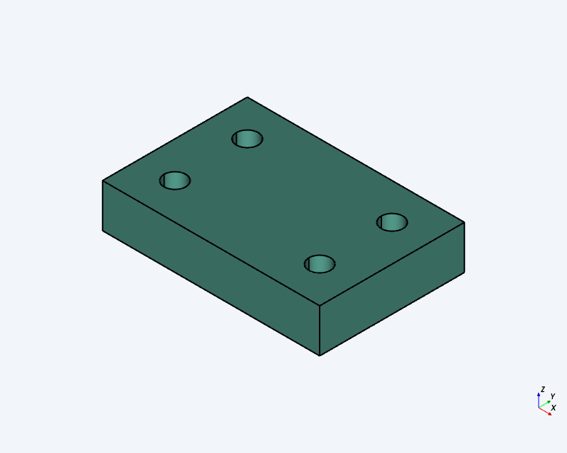
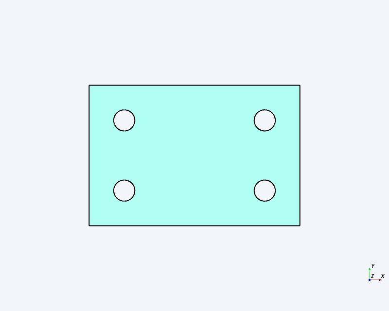
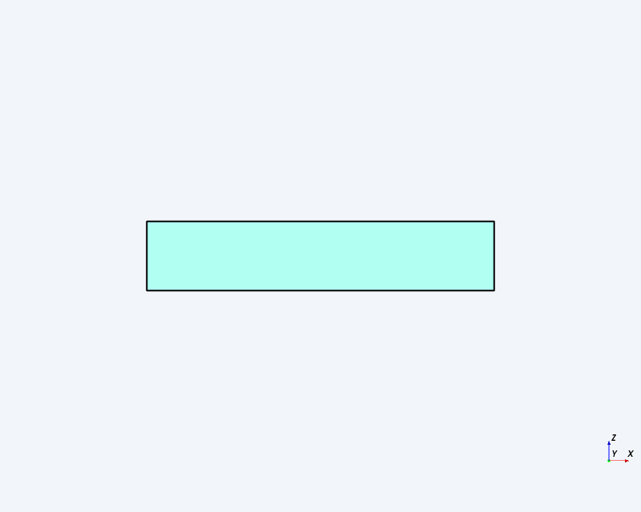
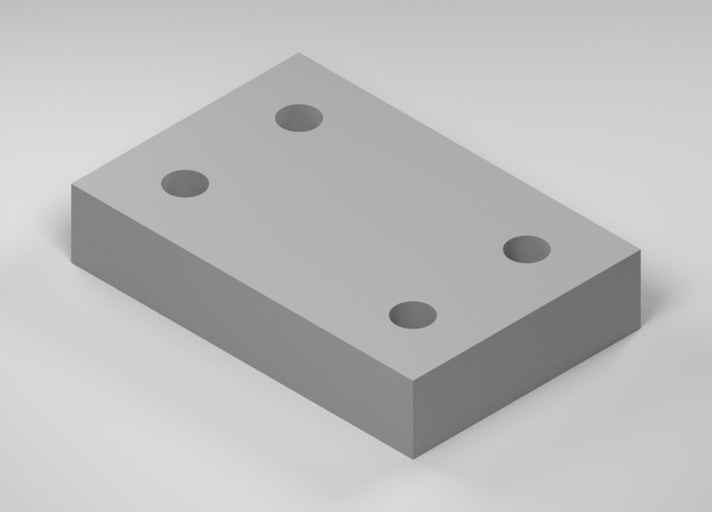
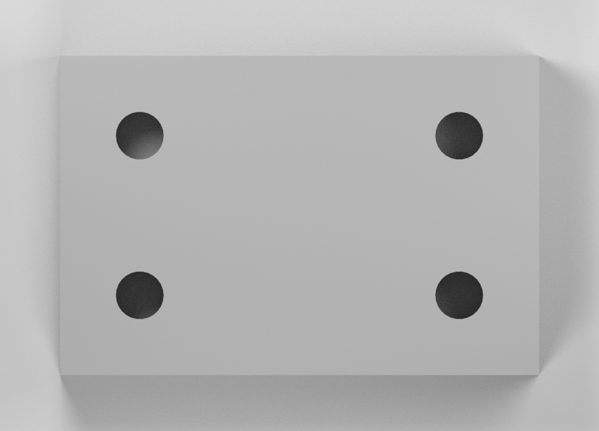
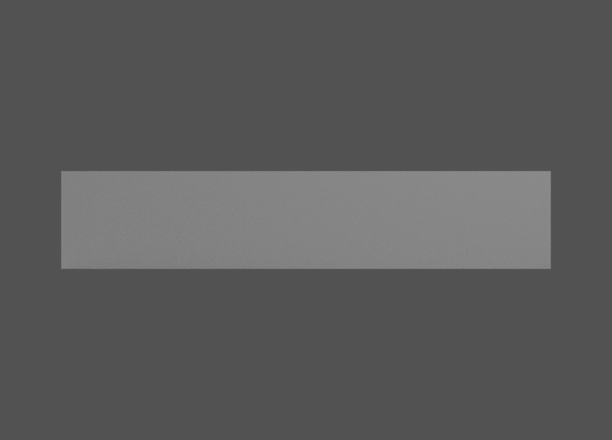

One-component rectangular four-hole block · Revision 1 · millimetres
Create exactly one solid block occupying X=0…60, Y=0…40 and Z=0…12, with four plain Ø6 through-bores parallel to Z. Fillets, chamfers, counterbores, text and extra components are prohibited. Presentation finish is neutral matte gray.
| Editable design | Open SteveCAD document d442c37d-9692-4e14-9313-50816612e22a |
|---|---|
| Exact CAD identity | Revision 1; build fece0b2c-58b4-4c3c-b66c-ff9986ed0879; succeeded; topology complete |
| Full export identity | Same document, revision and build; mode full. A different full-build ID on the same revision would be a separate export identity and would not by itself prove geometry change or byte equivalence. |
| Rendering run | 15a0b7ad27374a0e9375923cc4dc2725; native Blender render of the validated STEP mesh |
| Measured item | Nominal | Actual evaluated geometry | Deviation |
|---|---|---|---|
| Bounds | X 0…60; Y 0…40; Z 0…12 mm | X 0.00…60.00; Y 0.00…40.00; Z 0.00…12.00 mm | All endpoints 0.00 mm |
| Overall dimensions | 60 × 40 × 12 mm | 60.00 × 40.00 × 12.00 mm | 0.00 mm each |
| Topology | 1 component; 1 connected solid | 1 component; 1 body; 1 solid; 1 connected region; 10 faces | Exact |
| Net volume | 27,442.83197364921 mm³ | 27,442.831973649212 mm³ | ≈2×10−12 mm³; relative error ≈7.3×10−17 |
| Feature | Actual center XY (mm) | Actual Ø / depth (mm) | Actual B-rep evidence |
|---|---|---|---|
| H1 | (10.00, 10.00) | 6.00 / 12.00 | Cylinder; axis [0,0,−1]; Z 0…12; openings at both Z faces |
| H2 | (50.00, 10.00) | 6.00 / 12.00 | Cylinder; axis [0,0,−1]; Z 0…12; openings at both Z faces |
| H3 | (10.00, 30.00) | 6.00 / 12.00 | Cylinder; axis [0,0,−1]; Z 0…12; openings at both Z faces |
| H4 | (50.00, 30.00) | 6.00 / 12.00 | Cylinder; axis [0,0,−1]; Z 0…12; openings at both Z faces |
All 6 bounds, 3 dimensions, 8 center coordinates, 4 diameters and 4 depths have 0.00 mm reported deviation against the ±0.01 mm tolerance.
| ID | Requirement | Verdict | Actual result | Evidence |
|---|---|---|---|---|
| R01 | Specified envelope and origin | PASS | Bounds [0,0,0,60,40,12] mm; size 60×40×12 mm; zero reported deviation. | Evaluated extent/bounds metadata |
| R02 | Four specified Ø6 through-holes | PASS | Exactly four analytic cylinders at all specified centers; Ø6.00, depth 12.00 mm, axes Z-parallel. | B-rep hole-wall measurements |
| R03 | No prohibited features | PASS | One box plus four simple bores; six planar exterior faces and four bore cylinders; prohibited-feature counts zero. | Topology and component/feature inspection |
| R04 | Exactly one connected solid | PASS | Solid=1, body=1, connected regions=1. | Provider-native topology |
| R05 | All linear measurements within ±0.01 mm | PASS | Every required reported measurement has 0.00 mm deviation. | Geometry-derived measurement set |
| R06 | Volume error ≤0.1% | PASS | Actual 27,442.831973649212 mm³; relative error ≈7.3×10−17. | Evaluated B-rep volume |
| R07 | Individually confirm actual bores | PASS | H1–H4 each has a cylindrical wall, Ø6.00 mm, 12.00 mm traversal and axis [0,0,−1], intersecting both Z faces. | Named B-rep walls H1–H4 |
| R08 | Three native CAD captures | PASS | Isometric, top and front captures present; geometry summary remained 1 solid, 1 component, 10 faces and 27,442.831973649212 mm³. | Supplied CAD images; revision/build above |
| R09 | Three corresponding neutral-gray studio renders | PASS | Three images present. Pairwise inspection finds matching feature visibility, silhouettes and orientation classes; render surfaces are neutral matte gray. No visible geometry discrepancy observed. | Supplied image pairs and mesh-chain report |
| R10 | Complete final review | PASS | This record contains 10 requirement results, nominal/actual data, geometry evidence, solid count, volume error, 3 CAD captures, 3 renders and an explicit unresolved-finding count. | Final-document content audit: 10/10 records; 6/6 images |






| Pair | Feature count and silhouette | Camera/orientation | Appearance verdict |
|---|---|---|---|
| Isometric | Four visible openings; matching unfilleted block silhouette and visible top/two-side organization. | Corresponding elevated diagonal orientation consistent with (+X,−Y,+Z). | PASS — render is neutral matte gray; CAD provider color is permitted. |
| Top | Four visible circular openings; matching rectangular outline and qualitative 2×2 placement. | Top-down +Z class. | PASS — neutral matte gray. |
| Front | Zero visible openings in both; matching wide, low rectangular outline. | Front −Y class. | PASS — neutral matte gray. |
The presentation checks are qualitative visible-feature comparisons, not pixel-identity or exact B-rep-equivalence tests. Visual inspection does not establish dimensions, exact hole locations, exact camera transforms or geometric compliance; those conclusions come only from the measured B-rep evidence above. A rendered image never proves a geometric requirement.
Export and geometry-matching citation: render-proofs/native-chain-001/automatic-transfer-001/15a0b7ad27374a0e9375923cc4dc2725/native-identity.json identifies document d442c37d-9692-4e14-9313-50816612e22a, revision 1, build fece0b2c-58b4-4c3c-b66c-ff9986ed0879. The supplied Blender geometry report records run 15a0b7ad27374a0e9375923cc4dc2725, one CAD mesh, scale 0.001 m per input mm, 444 polygons, extent error 0.0000028312206268310547 mm and geometry_changes=false. This supports the transfer chain but is not a claim of byte identity or exact dimensional proof from imagery.